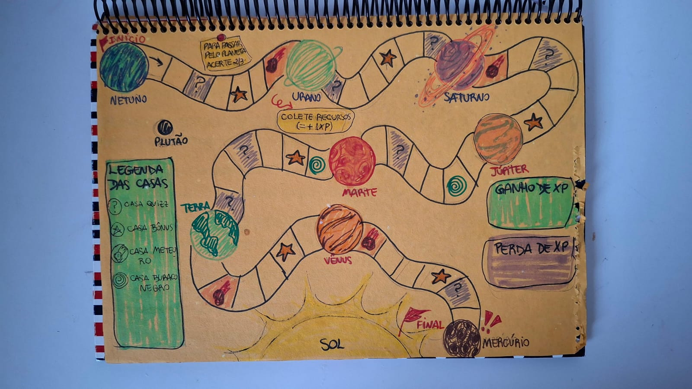

O projeto O Último Eclipse consiste no desenvolvimento de um jogo de tabuleiro
educativo sobre o Sistema Solar, criado para crianças do 3º ano do Ensino Fundamental. O objetivo é
tornar o aprendizado sobre os planetas mais divertido, dinâmico e interativo, por meio de uma aventura
espacial que estimula a curiosidade e o interesse pela ciência.
O jogo foi desenvolvido pelas alunas Mariana, Emanuelle, Fabiana, Gabrielly e Rayssa, do
curso de Design Digital. O grupo trabalhou em conjunto na criação da história, na elaboração
das regras, no desenvolvimento dos desafios e na organização visual do tabuleiro, buscando proporcionar uma
experiência educativa e envolvente.
Durante a partida, as crianças exploram os planetas, respondem a perguntas e enfrentam obstáculos para cumprir
a missão de salvar o Sistema Solar. Dessa forma, o projeto une design, criatividade e educação, incentivando a
aprendizagem de maneira lúdica e tornando o conteúdo mais acessível e interessante para os alunos.
